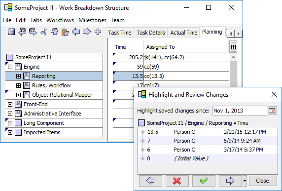
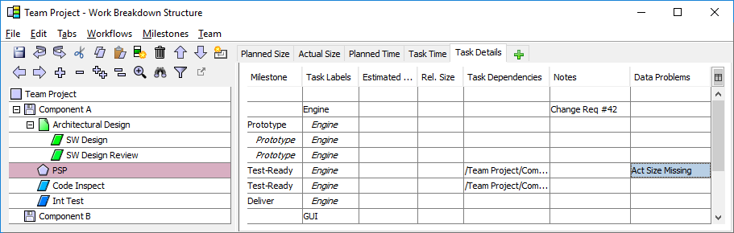

Workload balancing is an important part of team project management. When you determine that you need to reassign tasks, take these steps.
Throughout the course of the project, teams will frequently refine their plan based on newly available information. As a result, the team plan will change continually over time. Reviewing and monitoring these changes is an important part of project management and tracking, so two review methods are provided.
For a quick and simple review, choose "WBS Change History Report" from the Team Dashboard. This will display a chronological report showing:
You may find it useful to review the contents of this report in preparation for your weekly team meeting, or during the meeting itself.
For a more detailed review of changes, open the WBS Editor and choose "Highlight and Review Changes" from the "File" menu. This will invite you to select a date in the past; then it will find changes that have occurred in the team plan since that date. The WBS Editor will display a triangular annotation in the top-left corner of each modified cell. If you select one of these annotated cells, a floating window will show you the history of how that cell has changed over time, along with the name of the individual who made each change.

You can use the arrow buttons to move from one change to the next. If you discover something worrisome or problematic, you can click the red "X" to bring the problem to the team's attention.
While reviewing data, you may sometimes discover problems with the plan or with actual data. For example, an inspection might be done but one team member forgot to mark it complete. Or an individual might have marked a PSP task complete without entering any actual size data. You can annotate these problems by switching to the Task Details tab and entering a value in the Data Problems column.

When a note is entered into the Data Problems column:
The presence of a note in the Data Problems column will not have any effect on team rollups or earned value calculations. This column is strictly a communications tool to facilitate the job of coaches, quality managers, team leaders, etc. When the problem has been resolved, you can clear the error flag by deleting the note from the Data Problems column.
During the launch, the team creates a comprehensive plan. But change is inevitable, and at times you may be asked to explore the impact of a major plan change. For example, stakeholders might want to know the schedule impact of a significant change in scope. Or management might need to know the project impact that would result from gaining or losing team members.
To explore these "what-if" scenarios, choose "Save a Copy" from the "File" menu of the WBS Editor. You can explore changes in this copy without corrupting the real team plan.
For more information on this feature, see the help topic on exploring alternative plans.
Most projects use an iterative development approach. In the Team Dashboard, the recommended best practice is to create a new Team Project to represent each successive project iteration. To assist with this task, a special "Relaunch Wizard" is provided.
The team leader or planning manager should generally run the Relaunch Wizard just before the team's project relaunch meeting. To do this, open the Team Dashboard, select the just-finished project from the list on the left, and choose "File → Alter Project → Relaunch." The Team Project Relaunch Wizard will open in your web browser.
Read each page of the relaunch wizard carefully and provide the information requested. The relaunch wizard will:
After the relaunch wizard finishes, each team member should:
These actions will happen automatically for most team members. But if a particular individual left the project at some time in the past, you may need to contact them and ask them to take these steps so the tasks in the their old plan are properly closed.
Most teams will also like to view view end-to-end project data that spans all of the iterations of the project. A Master Project meets this need. If you are just beginning your second iteration, you should create a Master Project and add both project iterations to this master. If you have already been using a master project, just add the new project iteration to the existing master project.